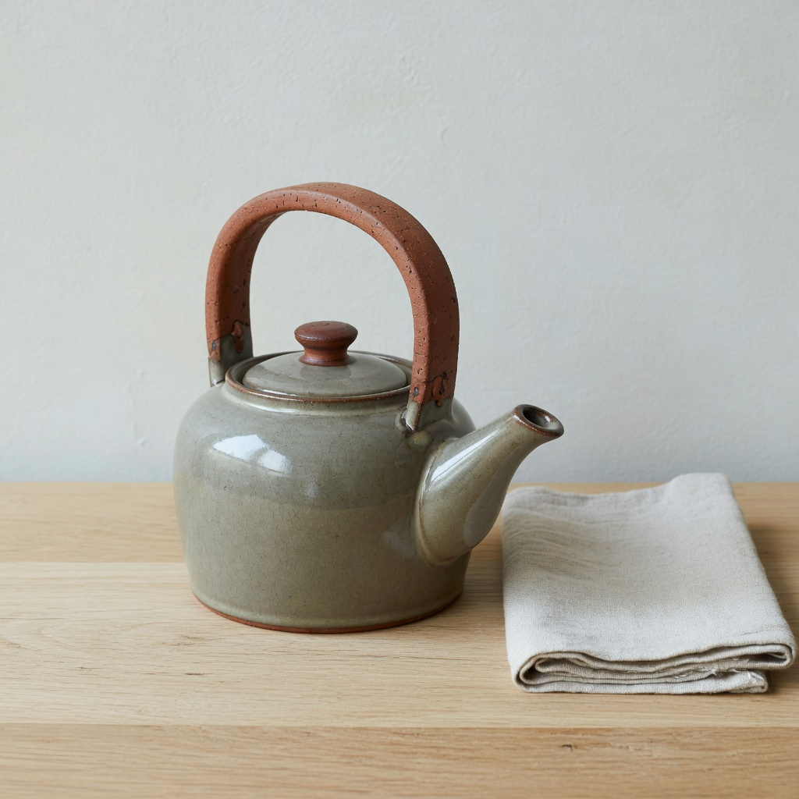

obs_0004
A glazed stoneware teapot with a warm gray-green glaze, unglazed clay handle and lid knob, sitting on a raw pale oak table. A single linen napkin lies folded to the right. Pale plaster wall behind. Neutral daylight from a window at camera left. Clean contemporary still-life photograph: natural color, moderate contrast, sharp focus on the spout, no film effects, no glow, no grain, no stylization. Three-quarter view, 50mm-equivalent, camera at pot height, square 1:1 frame.
| vector | score | conf |
|---|---|---|
| vec_optical_softness | 0.18 | 0.72 |
| vec_edge_softness | 0.16 | 0.68 |
| vec_microcontrast | 0.64 | 0.70 |
| vec_diffusion | 0.08 | 0.60 |
| vec_halation | 0.04 | 0.70 |
| vec_highlight_bloom | 0.06 | 0.66 |
| vec_bokeh_softness | 0.10 | 0.55 |
| vec_shadow_density | 0.30 | 0.68 |
| vec_black_level | 0.22 | 0.60 |
| vec_key_to_fill_ratio | 0.28 | 0.58 |
| vec_source_hardness | 0.32 | 0.55 |
| vec_highlight_rolloff | 0.35 | 0.50 |
Hoop handle rather than side handle. Lock is otherwise tight. Baseline scores for the locked anchor.